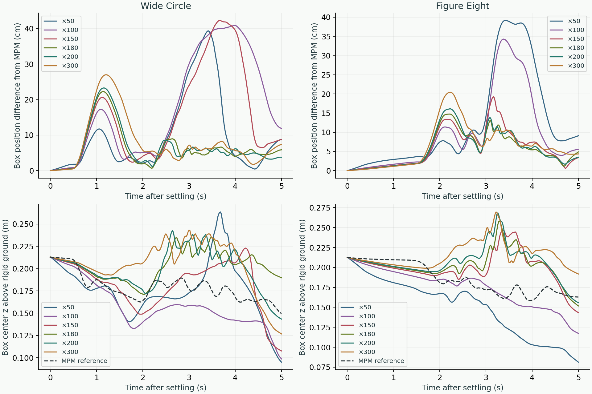
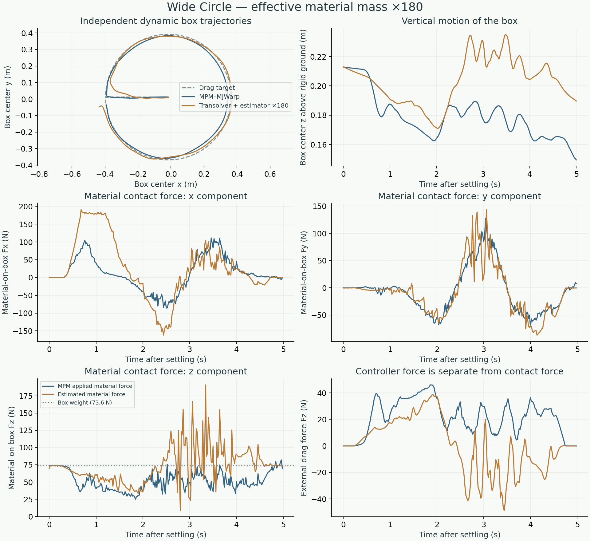
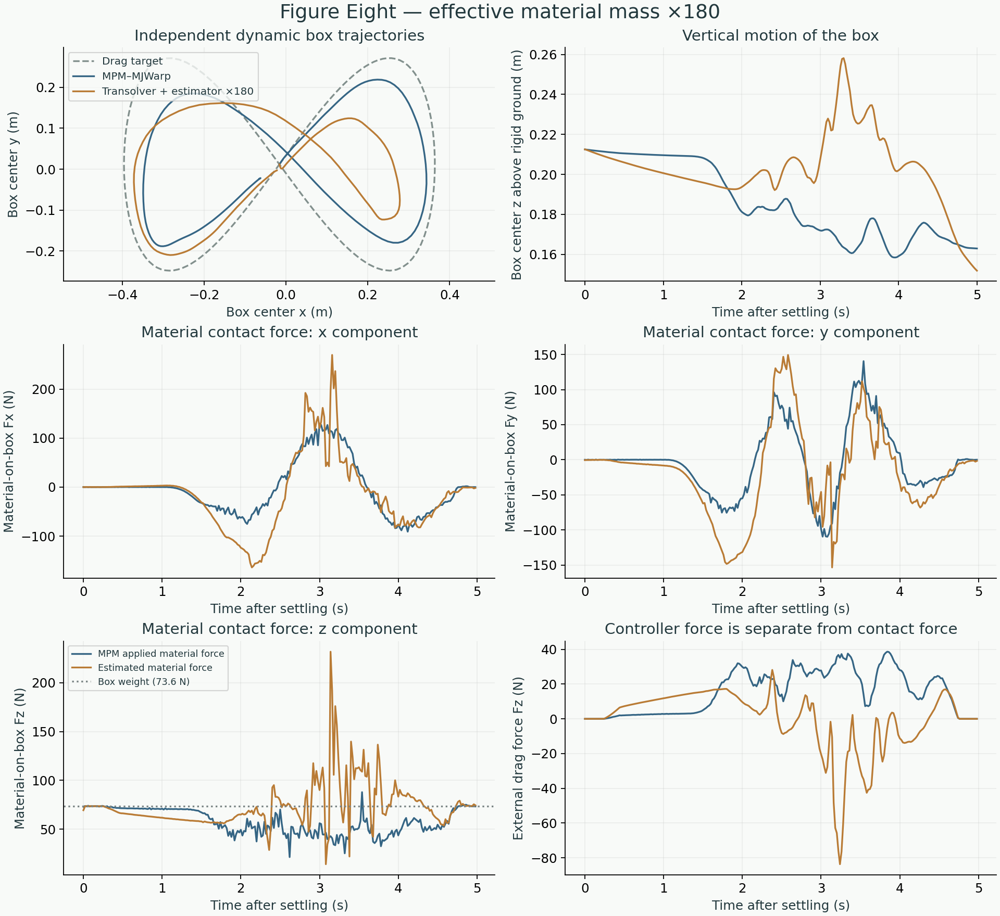

FULL DYNAMIC SIMULATION / EFFECTIVE MATERIAL MASS
Closed-loop simulation: ×50, ×100, ×150, ×180, ×200, ×300
Wide-circle and figure-eight dragging with independently simulated particles and box motion.
Added ×150: box-position RMS difference is 20.3 cm for the circle and 7.6 cm for the figure eight. All 500 contact solves converged. The figure-eight material-force RMS difference is 63.0 N (×200: 65.6 N), but the circle difference is 99.5 N (×200: 73.0 N). ×150 does not improve both trajectories.
Added ×180: all 500 contact solves converged. Material-force vector RMS differences are 70.1 N for the circle and 63.7 N for the figure eight (×200: 73.0 N and 65.6 N). The improvement is measured on these two trajectories only; no repeated trials or uncertainty intervals were evaluated.
01 / Matched comparison
All twelve five-second simulations use the same frozen Transolver checkpoint, initial reference states, drag targets, controller, material, geometry, and rendering. Only the estimator’s effective material-particle mass multiplier changes. The physical 7.5 kg box mass, physical particle masses, and reference proxy multiplier are unchanged. No model training or force filtering was added.
| Multiplier / trajectory | Box-position RMS difference | Final box-position difference | Material-force vector RMS difference | Final particle-position RMSE | Contact solves reaching iteration limit |
|---|---|---|---|---|---|
| ×50 / wide-circle | 14.7 cm | 8.8 cm | 67.7 N | 5.8 cm | 12 / 250 |
| ×50 / figure-eight | 17.5 cm | 9.1 cm | 84.3 N | 6.4 cm | 1 / 250 |
| ×100 / wide-circle | 23.0 cm | 11.9 cm | 103.7 N | 7.4 cm | 0 / 250 |
| ×100 / figure-eight | 13.7 cm | 5.5 cm | 72.5 N | 6.4 cm | 0 / 250 |
| ×150 / wide-circle | 20.3 cm | 8.7 cm | 99.5 N | 5.6 cm | 0 / 250 |
| ×150 / figure-eight | 7.6 cm | 3.4 cm | 63.0 N | 6.2 cm | 0 / 250 |
| ×180 / wide-circle | 8.4 cm | 5.8 cm | 70.1 N | 5.0 cm | 0 / 250 |
| ×180 / figure-eight | 6.9 cm | 4.9 cm | 63.7 N | 6.2 cm | 0 / 250 |
| ×200 / wide-circle | 8.8 cm | 3.8 cm | 73.0 N | 5.1 cm | 0 / 250 |
| ×200 / figure-eight | 7.3 cm | 3.5 cm | 65.6 N | 6.3 cm | 0 / 250 |
| ×300 / wide-circle | 10.7 cm | 7.3 cm | 81.7 N | 5.2 cm | 0 / 250 |
| ×300 / figure-eight | 8.4 cm | 4.3 cm | 73.8 N | 6.3 cm | 0 / 250 |
Solver limitation at ×50: 12 circle steps and one figure-eight step reached the 2,000-iteration limit. Their returned forces were used, as in the existing runner, and are included in the errors and videos. Every step at ×100, ×150, ×180, ×200, and ×300 met the residual tolerance 1e−9. All twelve simulations completed with finite states. Iteration counts and convergence fractions are in the downloadable measurements.
These are differences between evolving trajectories, not force-estimation errors evaluated at identical particle and box states. The external controller can compensate for incorrect material forces; target tracking alone does not validate contact physics.

02 / Videos and force profiles
Choose a multiplier under each trajectory. ×180 is displayed initially because it has the lowest box-position error in this comparison. All twelve videos are available, including the new ×180 circle and figure-eight simulations.
Wide Circle
Left: MPM–MJWarp. Right: recurrent Transolver particles + analytical estimator + MJWarp. Each box evolves independently. Same scene, camera, particle appearance, and box appearance. Selecting a multiplier changes the video and force plots together.

Figure Eight
Left: MPM–MJWarp. Right: recurrent Transolver particles + analytical estimator + MJWarp. Each box evolves independently. Same scene, camera, particle appearance, and box appearance. Selecting a multiplier changes the video and force plots together.

03 / Simulation pipeline
MPM–MJWarp reference
MPM material + own box state → material reaction / coupler → MJWarp + external drag force → next box state → next MPM step
Learned simulation
Own particle history + own box state → Transolver displacement → particle velocity = displacement / dt → analytical contact force and torque → MJWarp + external drag force → next box state → next prediction
Only the initial three particle frames, particle properties, and settled box state come from MPM. The learned simulation then uses its own recurrent particle history and own rigid-body motion, with no future reference states, state resets, region selection, or MPM solver. Estimated contact impulses are not applied to particles a second time.
04 / Controller and numerical settings
F_drag = envelope × clamp_norm(m × [120 × (target − box_position) − 15 × box_velocity], 2.5 × m × 9.81) Drag force acts at the box center of mass; external drag torque = 0.
Each controller evaluates its own box position and velocity every 5 ms. Both simulations share the target, not their applied forces. No box trajectory is prescribed. Active dragging is 0.25–4.75 s with a 0.75 s lead-in; the circle target diameter is 0.76 m and the figure-eight spans 0.76 × 0.52 m.
| Setting | Value |
|---|---|
| Particle model | Frozen update 10,000, trained over 0.5 s; all 16,384 particles updated every 20 ms |
| Reference material | MPM every 5 ms, 25 solver iterations, 0.04 m grid |
| Rigid bodies / controller | MJWarp / drag controller every 5 ms |
| Estimated material wrench | Updated every 20 ms and held for four rigid substeps |
| Estimator settings | Mass multiplier as selected; stabilization 0.01; velocity-gradient radius 0.065 m; friction 0.6; maximum 2,000 iterations; tolerance 1e−9 |
| Scene | 1 × 1 × 0.5 m initial sand volume; 0.12 × 0.12 × 0.08 m box, 7.5 kg; rigid ground z = 0; no enclosing walls |
The estimator uses the interval-start external force in its 20 ms free-motion calculation; MJWarp updates the controller every 5 ms. Direct rigid-ground contact is handled by MJWarp. The plotted material forces exclude that direct rigid-ground reaction, gravity, and external dragging. Positive Fz is upward. Reference forces are MPM feedback applied to MJWarp, averaged over matching 20 ms intervals.